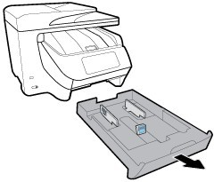

To print a photo from the computer (Windows)
1. Load paper in the input tray.

2. From your software, select Print.
3. Make sure your printer is selected.
4. Click the button that opens the Properties dialog box.
5. Select the appropriate options on the Printing Shortcut tab.
NOTE: If youchange the papersize, be suretoload the correctpaper in the inputtray and set the papersize on the printercontrolpanel.
6. Click OK to close the Properties dialog box.
7. Click Print or OK to begin printing.
NOTE: After the printing is finished, remove unused photo paperfrom the input tray. Store the photo paper so it doesnotstartto curl, which couldreduce the quality ofyourprintout.